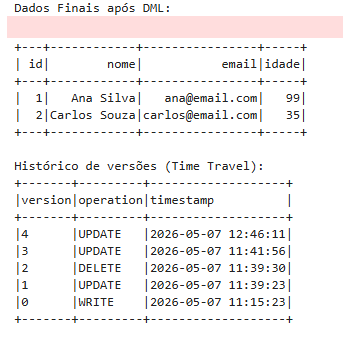

Requisito 3: Operações DML no Delta Lake
O que foi solicitado
"Após a conversão para DELTA LAKE, reproduza as 3 operações de DML (insert, update e delete) feitas no trabalho anterior para as tabelas DELTA LAKE do bucket 'bronze' (não precisa usar todas as tabelas)."
Nossa Implementação
O principal diferencial arquitetural de salvar arquivos no formato Delta Lake (e não Parquet tradicional) é justamente obter suporte nativo às operações DML (Data Manipulation Language) regidas por garantias transacionais ACID, mesmo lidando com um Object Storage descentralizado como o MinIO.
Para comprovar esse comportamento, criamos e executamos o caderno 03_dml_delta.ipynb, aplicando as três operações fundamentais sobre a nossa tabela Delta na camada Bronze:
Evidências de Execução (Prints das Operações DML)
Abaixo, comprovamos graficamente a execução do Spark modificando a tabela Delta.
1. Atualização de Dados (Update)
Modificamos o valor de um registro pré-existente (ex: o VAR alterando o autor do gol e a flag de revisão) aplicando uma cláusula de condição UPDATE WHERE do Spark.

2. Exclusão de Dados (Delete)
Removemos um registro específico da nossa tabela Delta passando um identificador (ID) como condição para o comando DELETE. No nosso cenário, simulamos o VAR anulando um gol por impedimento. O Delta cuidou de invalidar atomicamente os arquivos Parquet antigos.

Extra: Histórico de Alterações (Time Travel)
Além das 3 operações exigidas, a simples execução do comando .history() na nossa tabela Delta no final do caderno prova o versionamento ativado de forma imutável pelo ecossistema Lakehouse.
